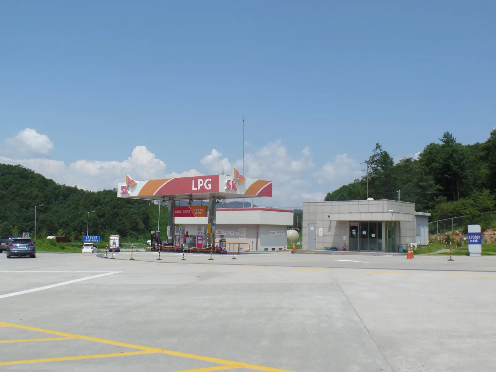
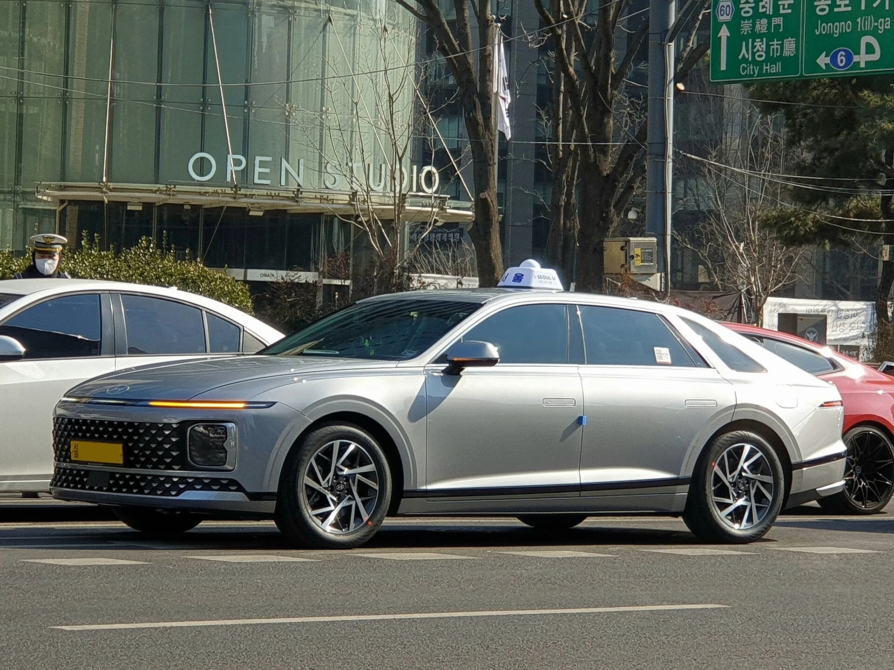

▲ 경안운수 소속 쏘나타 LPG 택시. 하루 수백km를 혹사당하면서도 고주행거리까지 버티는 대표적 차종이다 ⓒ Wikimedia Commons (CC BY-SA 4.0)
"10년 타도 멀쩡한 국산차 TOP3", "정비사가 몰래 추천하는 차"… 자동차 커뮤니티와 포털을 조금만 둘러봐도 이런 제목의 기사를 수도 없이 만난다. 문제는 이 기사들 대부분이 같은 얘기를 조금씩 다른 제목으로 반복하고 있을 뿐, 정작 근거가 되는 데이터는 흐릿하다는 점이다. 그래서 이번엔 반대로 접근했다. 누군가의 추천이 아니라, 실제로 폐차장에 들어간 차들의 기록을 봤다.
1. 폐차 47만 대, 실제로 얼마나 달렸나
컨슈머인사이트가 자동차 등록 데이터 분석 전문기업 CL M&S와 함께 2000년 이후 등록되고 지난해 말소된 국산·수입 승용차 47만 2,665대를 전수 분석했다. 결과는 평균 누적 주행거리 21만 3,858km. 흔히 '차 수명이 다했다'고 여겨지는 20만km를 넘어선 수치이자, 지구 둘레를 5바퀴 넘게 도는 거리다.
이 조사는 '어떤 차가 좋다더라'는 체감이 아니라, 실제로 폐차 등록된 차량의 주행거리 데이터를 표본으로 삼았다는 점에서 다른 추천형 기사와는 결이 다르다. 컨슈머인사이트 원문에서 확인 가능하다.
2. 1위는 의외로 LPG… 왜?
연료별로 나눠보면 격차가 뚜렷하다. LPG차는 평균 누적 주행거리 25만 6,758km로 전체 연료 중 1위였고, 20만km 이상 운행한 비율도 70.9%로 가장 높았다. 가솔린·디젤차보다 확연히 앞선 수치다.
이유는 연소 방식에 있다. LPG는 기화된 상태로 연소실에 들어가기 때문에 불순물과 카본(탄소 찌꺼기) 생성이 적다. 가솔린·디젤 엔진은 오래 탈수록 피스톤·밸브 주변에 카본이 쌓여 압축비와 연소 효율이 떨어지는데, LPG 엔진은 같은 주행거리에서도 내부가 비교적 깨끗하게 유지된다는 게 정비업계의 공통된 설명이다. 여기에 LPG 엔진은 가솔린 대비 운전 온도가 낮게 유지되는 경향이 있어, 열로 인한 부품 스트레스도 상대적으로 적다.

▲ 서울양양고속도로 가평휴게소의 LPG 충전소. 셀프 주유가 불가능해 항상 충전원이 직접 주입한다는 점도 국내 LPG 충전 방식의 특징이다 ⓒ Jhcbs1019, Wikimedia Commons (CC BY-SA 4.0)
3. 택시가 증명한 진짜 내구성 실험
이 데이터가 특히 설득력을 갖는 건 LPG차의 상당수가 택시로 쓰인다는 사실 때문이다. 일반 승용차가 연간 1만~2만km를 달린다면, 법인·개인택시는 하루 200~300km씩, 연간 5만km 이상을 소화하는 경우가 흔하다. 사실상 '가혹 조건 내구성 테스트'를 매일 반복하는 셈이다.
쏘나타·그랜저 LPG 모델은 이런 택시 시장의 주력 차종으로 오래 자리 잡아 왔다. 그만큼 부품 수급과 정비 데이터가 풍부하게 쌓여 있고, 동네 정비소에서도 익숙하게 다루는 차종이라는 점도 실사용 내구성에 한몫한다. 30만~50만km를 넘긴 택시 개체가 시동성과 주행 질감을 유지하는 사례가 드물지 않게 보고되는 이유다.

▲ 현대 그랜저 GN7 택시. 그랜저 역시 쏘나타와 함께 LPG 택시 시장의 주력 차종이다 ⓒ Damian B Oh, Wikimedia Commons (CC BY-SA 4.0)
4. 국산차 15.7년, 수입차 13.8년… 폐차 연령 격차
연료뿐 아니라 브랜드 출신(국산·수입) 기준으로도 흥미로운 격차가 있다. 한국자동차해체재활용업협회가 2000년부터 2020년까지 폐차 처리된 자동차 1,260만여 대를 조사한 결과, 국산차의 평균 폐차 사용연수는 15.7년, 수입차는 13.8년으로 국산차가 약 2년 더 길었다. 차종별로는 승용차 15.3년, 승합차 15.5년, 화물차 16.8년 순이었다.
이 격차의 원인을 한 가지로 단정하긴 어렵다. 다만 업계에서는 ▲국산차의 부품 단가와 공임이 상대적으로 저렴해 고연식 차량도 수리해서 계속 타는 유인이 크고 ▲전국 어디서나 정비 인프라 접근성이 좋으며 ▲수입차는 리스·법인 비중이 높아 계약 기간(통상 3~5년) 종료 시 교체되는 경우가 많다는 점을 복합적 요인으로 꼽는다.
5. 그렇다고 아무 LPG차나 사면 될까

▲ 고주행거리 계기판. LPG차라고 무조건 오래 가는 건 아니며, 관리 이력이 더 중요하다 ⓒ 카프리즘 자료사진
데이터가 LPG의 손을 들어준다고 해서 무조건 LPG차를 사라는 뜻은 아니다. 구매 전 짚어야 할 현실적인 변수가 있다.
- 충전 인프라: LPG 충전소는 가솔린·경유 주유소보다 수가 적고, 지역에 따라 접근성 편차가 크다. 셀프 충전이 불가능해 항상 충전원을 거쳐야 한다는 점도 감안해야 한다.
- 신차 구매 완화: 과거 LPG차는 장애인·국가유공자·택시 등으로 구매가 제한됐지만, 2019년 3월 관련 규제가 폐지되며 일반 소비자도 신차로 구매할 수 있게 됐다. 다만 완성차 업계의 LPG 신차 라인업 자체는 넓지 않다.
- 중고 LPG차 구매 시 체크포인트: 연료탱크(봄베) 재검사 이력, 택시 출신 여부(사업용 이력은 계기판 교체 여부와 함께 확인), 엔진룸 LPG 배관 부식 상태를 점검해야 한다.
- 주행거리가 전부는 아니다: 같은 LPG차라도 관리 이력(엔진오일 교체 주기, 냉각수 관리)에 따라 편차가 크다. '연료가 LPG'라는 사실 하나만으로 내구성을 보장받을 수는 없다.
6. 정리
체크포인트
- 실제 폐차 47만 대 데이터 기준, 가장 오래 달린 연료는 LPG(평균 25만 6,758km)였다.
- 국산차 평균 폐차 연령은 15.7년으로 수입차(13.8년)보다 약 2년 길다.
- 하루 수백km를 뛰는 택시가 LPG 엔진의 내구성을 실사용으로 증명해온 셈이다.
- 다만 관리 이력이 더 중요하며, LPG차라는 이유만으로 무조건 오래 가는 것은 아니다.